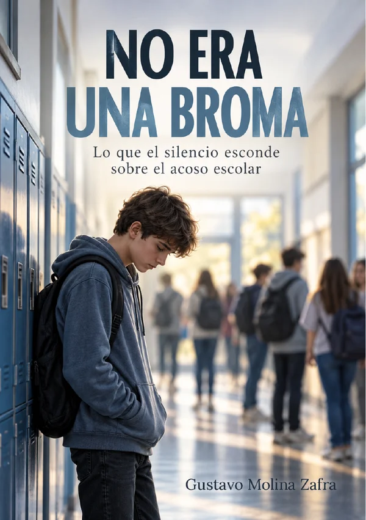

No era una broma
Lo que el silencio esconde sobre el acoso escolar
Gustavo Molina Zafra
A veces el acoso no empieza con un golpe, sino con una risa, un silencio o un grupo del que alguien queda fuera.
No era una broma es una historia cercana y valiente sobre el bullying, la soledad, el miedo a hablar y la importancia de actuar a tiempo.
A través de la historia de Álex y de quienes le rodean, este libro ayuda a comprender cómo nace el acoso, cómo afecta a quien lo sufre y qué pueden hacer los compañeros, las familias y los centros educativos para frenarlo.
Una obra pensada para adolescentes, familias y docentes. Un libro para entender, prevenir y no mirar hacia otro lado.
Gratis y sin registro. El PDF es el formato de lectura con la maquetación del libro; el ePub se adapta al tamaño de cualquier pantalla.
- Para quiénAdolescentes desde 12 años, familias y docentes
- Qué contieneNovela breve en 24 capítulos, con prólogo, epílogo, 10 anexos prácticos y bibliografía
- AccesibilidadPDF accesible conforme a PDF/UA-1, validado con PAC sin errores. ePub validado con EPUBCheck.
- LicenciaCC BY-NC-ND 4.0: puedes compartirlo libremente, sin modificarlo y sin fines comerciales
Si te está pasando, no estás solo
Cuéntaselo a un adulto de confianza: tu familia, tu tutor o tutora, o el equipo de orientación de tu centro. Hablar no es chivarse: es pedir ayuda. Estos teléfonos son gratuitos:
Compártelo
Este libro sirve más cuantas más personas lo lean. Puedes enviárselo a otras familias, al grupo de clase o al claustro de tu centro.
© del texto: Gustavo Molina Zafra, 2026. Primera edición: octubre de 2026. Una publicación solidaria · Powered by Limonada Web.
Distribución gratuita y sin ánimo de lucro. Prohibida su venta.